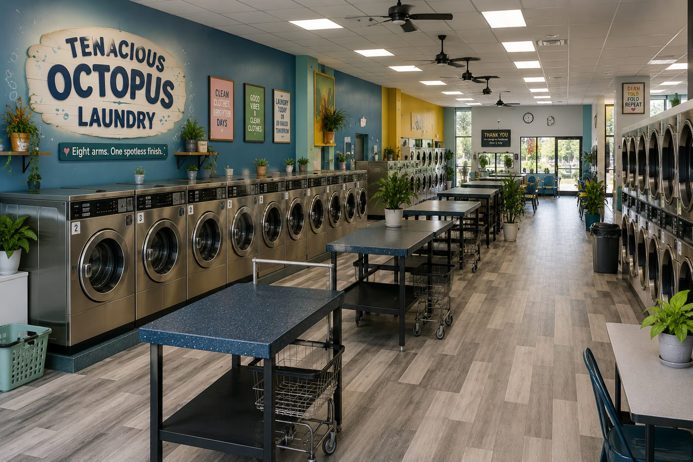
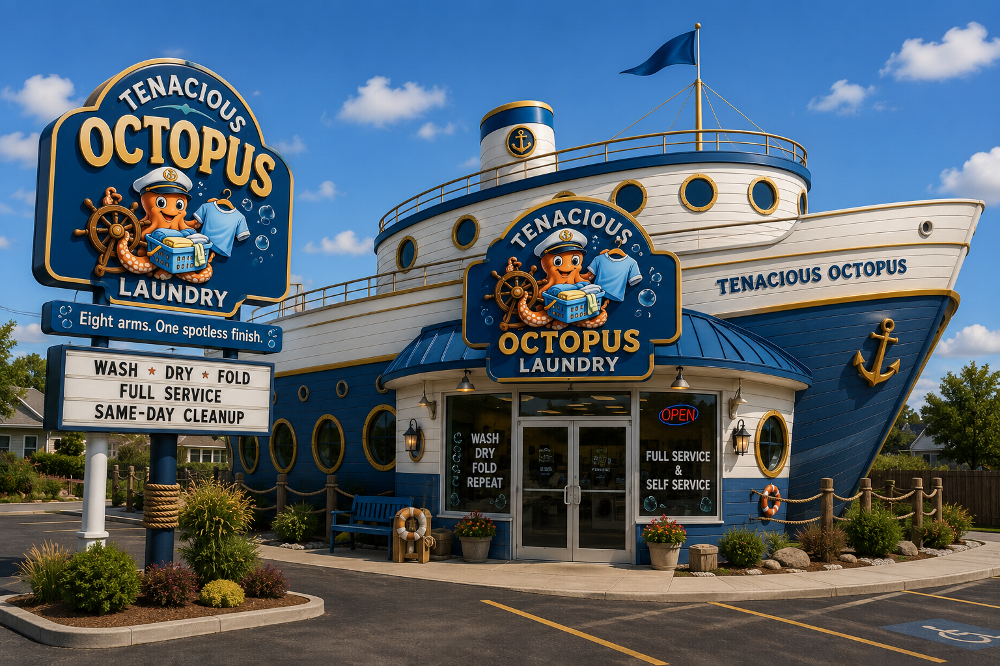

Welcome to Tenacious Octopus Laundry
Tenacious Octopus Laundry is a laundromat and laundry service where hardworking octopuses handle every load with care. With eight arms ready to wash, dry, fold, sort, and package, our friendly crew makes laundry day feel less like a chore and more like a smooth sailing adventure. Whether you're stopping in for self-service machines or letting our team handle everything from start to finish, we take pride in providing spotless results, exceptional customer service, and a fun atmosphere for every visitor.
Whether you need a quick wash, a full-service wash-and-fold, or an emergency same-day cleanup, our octopus crew is always ready to lend a tentacle. Our spacious, ocean-inspired laundromat features modern equipment, comfortable folding areas, and a welcoming environment designed to make every visit enjoyable. At Tenacious Octopus Laundry, we believe clean clothes should be simple, fresh, affordable, and maybe even a little fun—because with eight helping arms on the job, your laundry is always in capable hands.



Why Choose Us?
Our octopus workers are fast, careful, and surprisingly good at matching socks. We focus on friendly service, fresh results, and making laundry easier for busy customers.